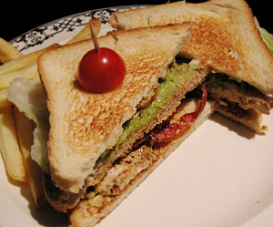

Club Sandwich
5 von 6Pouletbrust und Speck braten, beiseite stellen. Eine reife Avocado zu einer homogenen Masse verarbeiten, mit Salz, Pfeffer etc. würzen. Tomaten in feine Scheiben schneiden, Salatblätter in grosse Stücke reissen. Die erste Schicht Toast mit einer Sauce aus Mayonnaise und Senf bestreichen, die Pouletbrust und den Spech darauf geben. Mit der nächsten Schicht Toast bedecken. Diese mit dem Avocadomousse bestreichen. Tomaten sowie die Salatblätter darüber geben und mit dem letzten Toast bedecken. Diagonal in zwei Stücke scheiden, mit Ofenfritten servieren.
